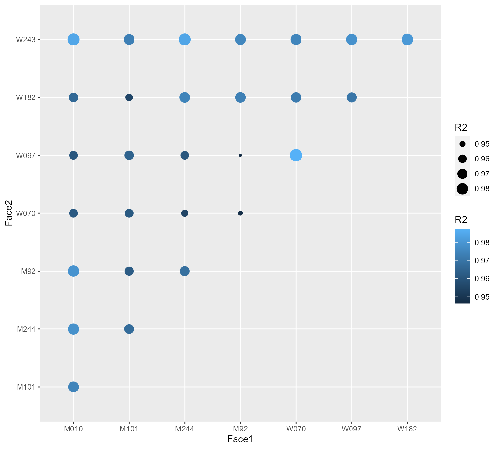

Comparing faces
Alexander (Sasha) Pastukhov
2022-02-17
Source:vignettes/comparing_faces.Rmd
comparing_faces.RmdTridimensional regression can be used to compare face similarity via R2 based on 3D landmarks.
faces <-
list("M010"=Face3D_M010,
"M101"=Face3D_M101,
"M244"=Face3D_M244,
"M92"=Face3D_M92,
"W070"=Face3D_W070,
"W097"=Face3D_W097,
"W182"=Face3D_W182,
"W243"=Face3D_W243)
face_comparison <-
dplyr::as_tibble(t(combn(names(faces), 2)),
.name_repair = function(x){c("Face1", "Face2")}) %>%
group_by(Face1, Face2) %>%
nest() %>%
mutate(Fit = purrr::map2(Face1,
Face2,
~fit_transformation_df(faces[[.x]],
faces[[.y]],
transformation ='translation',
refresh=0)))
face_R2 <-
face_comparison %>%
mutate(R2 = purrr::map(Fit, ~R2(.))) %>%
select(Face1, Face2, R2) %>%
unnest(cols=c(R2)) %>%
arrange(desc(R2))
knitr::kable(face_R2, digits = c(0, 0, 3, 3, 3))| Face1 | Face2 | R2 | R2_5.5 | R2_94.5 |
|---|---|---|---|---|
| W070 | W097 | 0.988 | 0.987 | 0.988 |
| M010 | W243 | 0.984 | 0.984 | 0.985 |
| M244 | W243 | 0.984 | 0.983 | 0.984 |
| W182 | W243 | 0.980 | 0.980 | 0.981 |
| M010 | M92 | 0.979 | 0.978 | 0.980 |
| W097 | W243 | 0.978 | 0.978 | 0.979 |
| M010 | M244 | 0.978 | 0.978 | 0.979 |
| M92 | W243 | 0.975 | 0.975 | 0.976 |
| W070 | W243 | 0.975 | 0.974 | 0.975 |
| M010 | M101 | 0.975 | 0.974 | 0.975 |
| M244 | W182 | 0.975 | 0.973 | 0.975 |
| M92 | W182 | 0.973 | 0.972 | 0.974 |
| M101 | W243 | 0.973 | 0.972 | 0.974 |
| W070 | W182 | 0.972 | 0.971 | 0.973 |
| W097 | W182 | 0.971 | 0.969 | 0.971 |
| M244 | M92 | 0.969 | 0.968 | 0.969 |
| M101 | M244 | 0.967 | 0.966 | 0.968 |
| M010 | W182 | 0.967 | 0.965 | 0.968 |
| M101 | W097 | 0.965 | 0.963 | 0.966 |
| M101 | M92 | 0.962 | 0.961 | 0.963 |
| M101 | W070 | 0.962 | 0.960 | 0.963 |
| M010 | W070 | 0.962 | 0.960 | 0.963 |
| M010 | W097 | 0.961 | 0.959 | 0.962 |
| M244 | W097 | 0.961 | 0.959 | 0.962 |
| M101 | W182 | 0.955 | 0.953 | 0.957 |
| M244 | W070 | 0.955 | 0.953 | 0.956 |
| M92 | W070 | 0.948 | 0.945 | 0.949 |
| M92 | W097 | 0.946 | 0.944 | 0.948 |
ggplot(data=face_R2, aes(x=Face1, y=Face2, size=R2, color=R2)) +
geom_point()